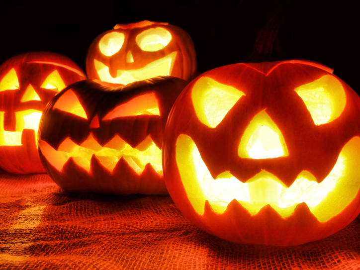

🎃 ჰელოუინი - საშინელებათა დღესასწაული 🎃
ჰელოუინის შესახებ
ჰელოუინი აღინიშნება ყოველწლიურად 31 ოქტომბერს. იგი თავდაპირველად კელტური წარმოშობის დღესასწაულია, რომელსაც ეწოდება All Hallows' Eve, რაც მოგვიანებით გახდა "Halloween".

რას აკეთებენ ჰელოუინზე?
- იცვამენ საშინელ კოსტიუმებს
- აფორმებენ სახლები შიშისმომგვრელ სტილში
- უყურებენ საშინელებათა ფილმებს
საინტერესო ფაქტები:
- ჰელოუინის ფერები ძირითადად არის ნარინჯისფერი და შავი
- გოგრა ითვლება ჰელოუინის სიმბოლოდ
- ადამიანები აკეთებენ "Jack-o’-lantern"-ებს, ეს არის განათებული გოგრები
მეტი ინფორმაციისთვის ეწვიეთ ვიკიპედიის გვერდს ჰელოუინზე.